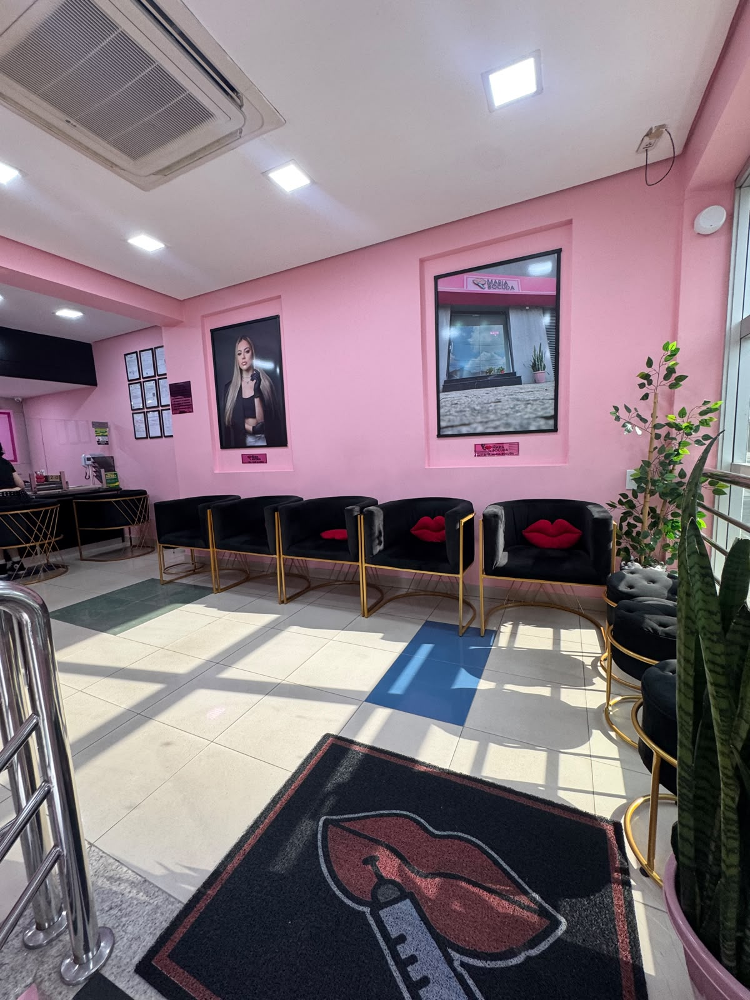
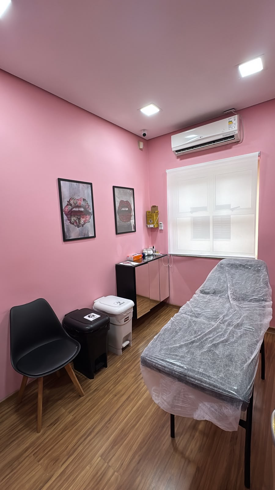

Sobre a clínica
Nossa história
A Maria Bocuda nasceu do desejo de cuidar da beleza com carinho e com técnica, num lugar onde você se sente à vontade. Aqui cada atendimento começa com uma conversa, e cada procedimento é pensado pra realçar o que você já tem de bonito.
Quem é a Gabi
Eu sou a Dra. Gabi, da Maria Bocuda. Eu acredito que beleza não é exagero, é realçar o que você já tem de bonito. Aqui no consultório eu te escuto, te explico tudo sem pressa, e a gente escolhe juntas o que faz sentido pra você.
Nossos valores
Naturalidade
Realçar o que você já tem, sem exagero. O resultado tem que parecer você.
Acolhimento
A gente te escuta e explica tudo, sem pressa e sem julgamento.
Técnica
Avaliação antes e procedimento feito com calma, com cuidado em cada detalhe.
A clínica por dentro

